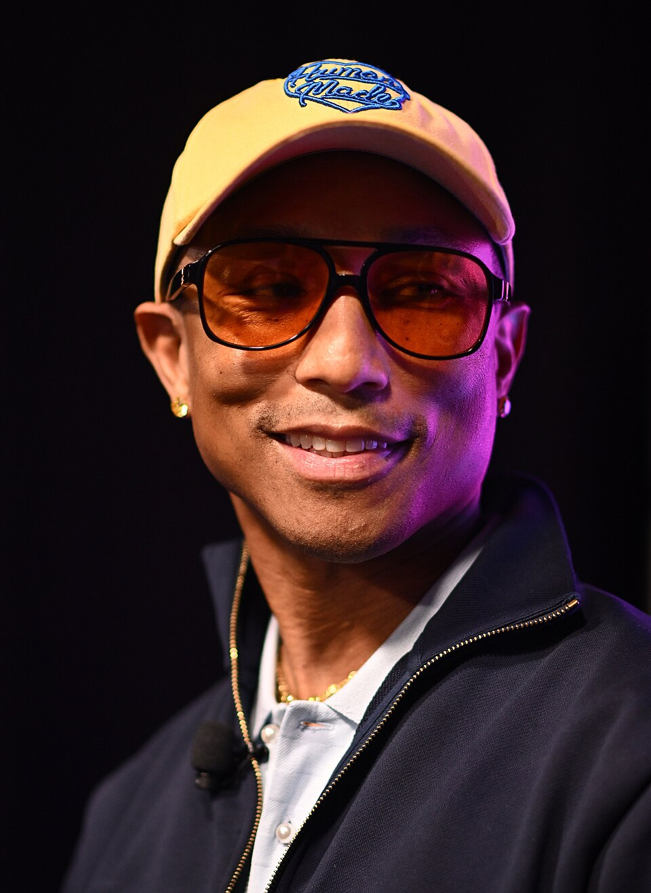
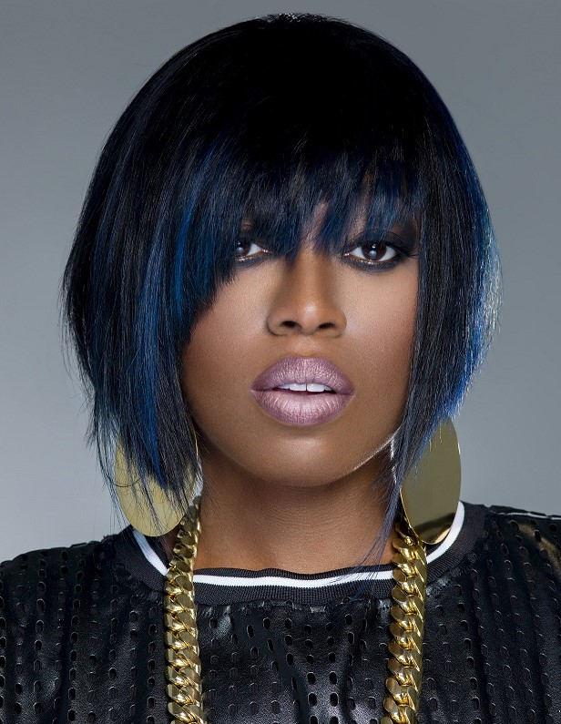
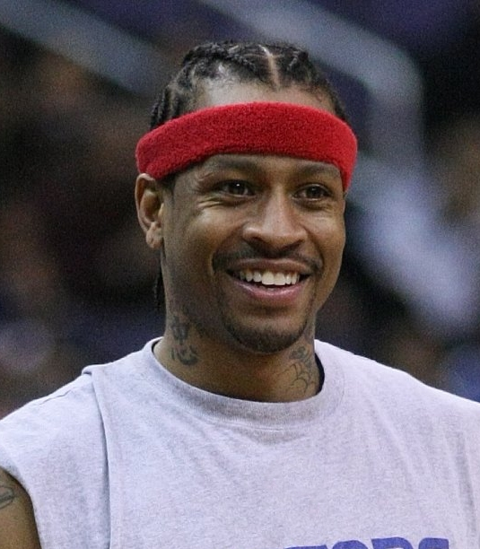
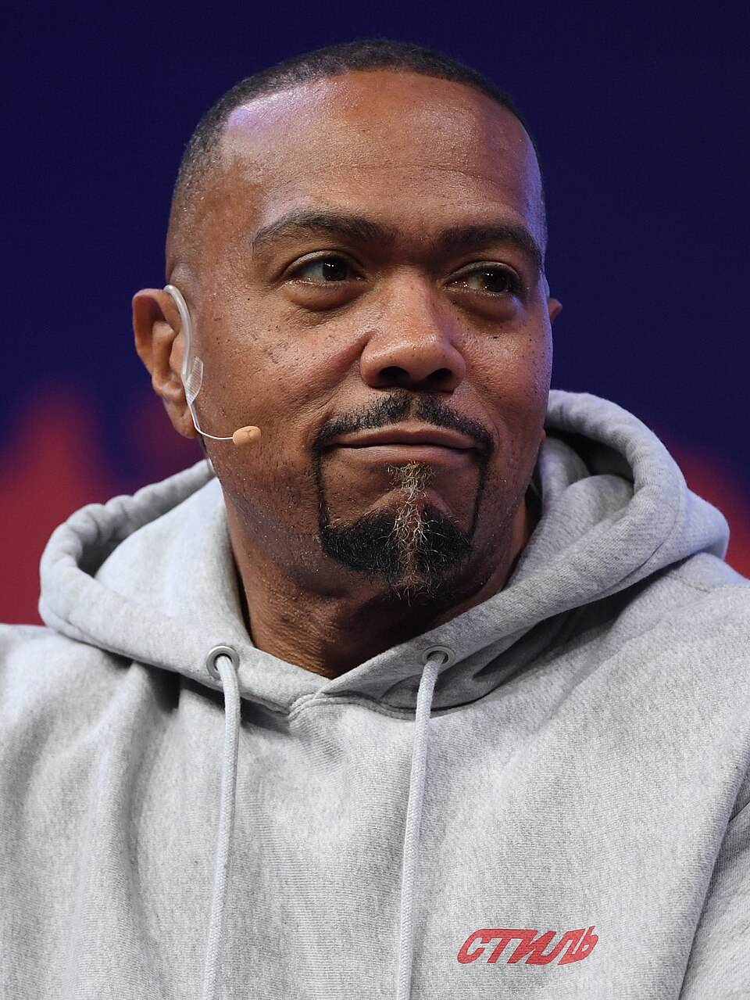
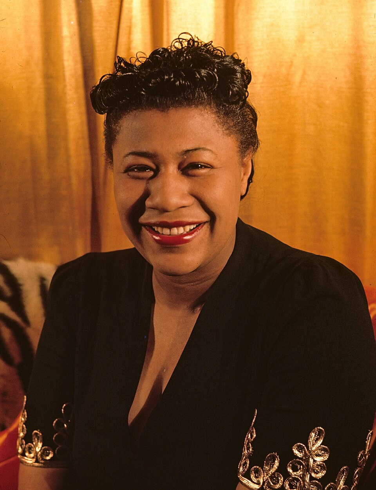
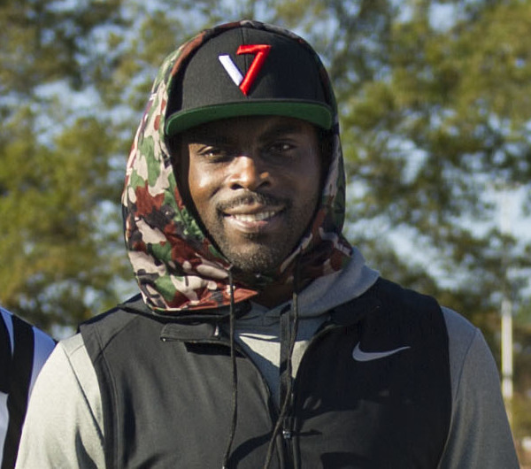
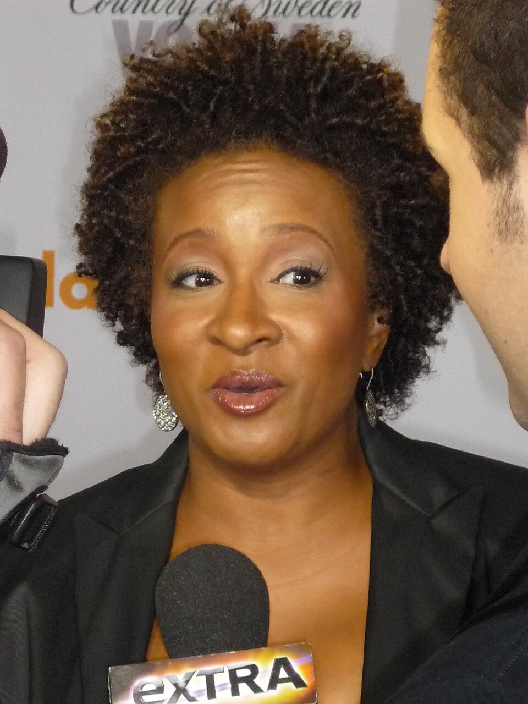
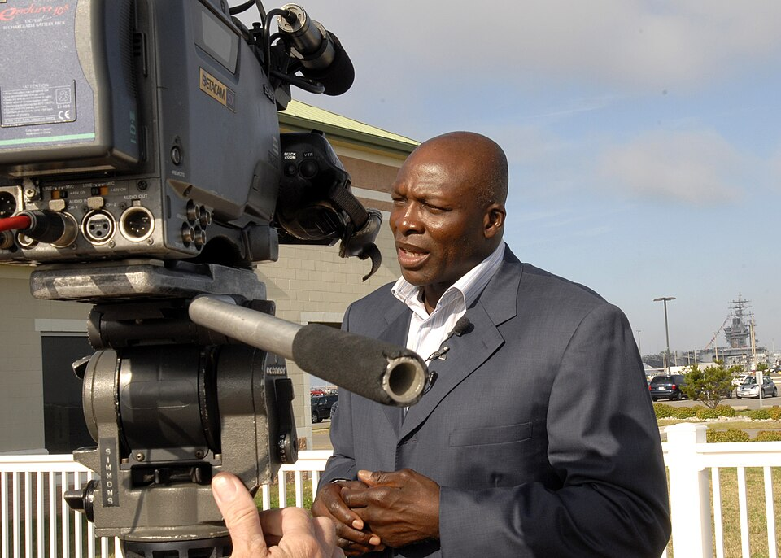

24 legends. One bracket. You decide. Eight play-in battles — winners join the top 8 seeds in the Round of 16. Click any contender for their full bio and 757 ties, then cast your vote.
Tap a contender card to select them — or hit View Bio first and read their case.
One vote per matchup per device. Winners advance to the Round of 16.
Share your picks. Tag us. Start fights (friendly ones).
The top 8 seeds earned byes. Winners of the play-ins draw them next.
VIRGINIA BEACH · MUSIC — awaits M8 winner
PORTSMOUTH · MUSIC — awaits M7 winner
HAMPTON · SPORTS — awaits M6 winner
NORFOLK · MUSIC — awaits M5 winner
NEWPORT NEWS · MUSIC — awaits M4 winner
NEWPORT NEWS · SPORTS — awaits M3 winner
PORTSMOUTH · COMEDY — awaits M2 winner
NORFOLK · SPORTS — awaits M1 winner

VIRGINIA BEACH · MUSIC
The hitmaker the whole planet sings along to.
Born in Virginia Beach in 1973, Pharrell Williams went from Princess Anne High School marching band to producing the sound of two decades. As half of The Neptunes, he crafted hits for Jay-Z, Britney Spears, and Snoop Dogg; solo, "Happy" became one of the best-selling singles of all time. Add N.E.R.D., a fashion empire, and the Louis Vuitton menswear creative director chair — the résumé doesn't fit in a bracket.
The case: Nobody from the 757 has a bigger global footprint. The favorite, and it's not close.

PORTSMOUTH · MUSIC
The most innovative rapper-producer alive.
Born in Portsmouth in 1971, Missy Elliott rewired hip-hop with 1997's Supa Dupa Fly — futuristic beats, surreal videos, a flow nobody could copy. "Work It," "Get Ur Freak On," "Lose Control": anthems across three decades. In 2023 she became the first female hip-hop artist inducted into the Rock & Roll Hall of Fame — and wrote hits for Aaliyah, Beyoncé, and Ciara along the way.
The case: Innovation, influence, and a Hall of Fame jacket. The complete package.

HAMPTON · SPORTS
The Answer. Pound for pound, the toughest ever.
Born in Hampton in 1975, Iverson took Bethel High to state titles in football and basketball, then Georgetown, then the 1996 #1 pick. The 2001 MVP dragged the Sixers to the Finals near-singlehandedly. Eleven All-Stars, four scoring titles, Hall of Fame 2016 — plus a cultural impact (the braids, the sleeves, the attitude) that changed the league forever.
The case: The most culturally important athlete the 757 ever produced.

NORFOLK · MUSIC
The producer who rebuilt pop music twice.
Born Timothy Mosley in Norfolk in 1972, Timbaland's stuttering, left-field beats powered Aaliyah, Missy Elliott, and Ginuwine — then Justin Timberlake ("Cry Me a River," "SexyBack"), Nelly Furtado, and Jay-Z. His sound defined the 2000s. Twice. Four Grammys and a production discography most legends would trade for.
The case: If Pharrell is the face, Timbaland is the architect. Flip a coin.

NEWPORT NEWS · MUSIC
The First Lady of Song.
Born in Newport News in 1917, Ella Fitzgerald became the most celebrated jazz vocalist in history — 13 Grammys, the "songbook" albums that defined the American canon, a voice Sinatra called the greatest. From amateur night at the Apollo to global icon across six decades.
The case: The greatest pure vocalist on this list. Respect the legend.

NEWPORT NEWS · SPORTS
The most electrifying QB ever.
Warwick High School to Virginia Tech to the #1 overall pick in 2001. Vick didn't just play quarterback — he reinvented the position, making the dual-threat QB the NFL's future. Four Pro Bowls, the fastest QB ever timed, and a phenomenon who changed how football is played at every level.
The case: Changed his sport more than anyone else here.

PORTSMOUTH · COMEDY
The sharpest wit in the bracket.
Born in Portsmouth in 1964, Sykes went from the NSA to stand-up to an Emmy writing for The Chris Rock Show, then scene-stealing runs on Curb Your Enthusiasm and The New Adventures of Old Christine. One of the most decorated comedians alive — and still the funniest person in any room.
The case: Brains, trophies, and the best punchlines in the 757.

NORFOLK · SPORTS
The NFL's all-time sack king.
Booker T. Washington High (Norfolk) to Virginia Tech to the #1 overall pick in 1985. Two hundred career sacks — still the NFL record. Eleven Pro Bowls, two Defensive Player of the Year awards, Hall of Fame 2009. Nineteen seasons of quarterback terror.
The case: The statistical GOAT of defense. Numbers don't argue.

VIRGINIA BEACH · MUSIC
Rap's most feared pen.
Raised in Virginia Beach, Pusha T (with brother Malice as Clipse) made Lord Willin' and Hell Hath No Fury — Neptunes-produced classics. Solo: Daytona, one of the decade's best rap albums. Former president of G.O.O.D. Music. Twenty-plus years, zero misses.
The case: The lyricist's champion. Ask any rapper.

CHESAPEAKE · SPORTS
Heart of a champion, literally.
Indian River High (Chesapeake) to Georgetown to the 1992 #2 pick. Seven All-Stars, two Defensive Player of the Year awards — and a 2006 NBA title with the Heat, won after a kidney transplant. Hall of Fame 2014. Intensity personified.
The case: Overcame more than anyone here. Grit wins brackets.

NORFOLK · MUSIC
Mr. Las Vegas.
Born in Norfolk in 1942, Wayne Newton became "Mr. Las Vegas" — 30,000+ shows on the Strip, "Danke Schoen," and a residency career spanning six decades. One of the best-selling artists ever, and Vegas royalty.
The case: Longevity nobody else touches. The people's entertainer.

CHESAPEAKE · COMEDY
The impressionist who owned SNL.
Born in Chesapeake in 1987, Pharoah's dead-on impressions — Obama, Denzel, Jay-Z — made him an SNL standout from 2010 to 2016. Since: film, stand-up tours, and one of comedy's most versatile performers.
The case: The bracket's funniest dark horse.

PORTSMOUTH · MUSIC
The Queen of R&B.
Born in Portsmouth in 1928, Ruth Brown's Atlantic Records hits made the label's fortune in the '50s — they called it "the house that Ruth built." Grammy winner, Tony winner, Rock Hall inductee. She spent her life fighting for artists' royalties.
The case: Built the house everyone else parties in.

VIRGINIA BEACH · SPORTS
The catch that won a Super Bowl.
Green Run High (Virginia Beach) to Michigan State to the NFL — where he caught the game-winning touchdown in Super Bowl XLII, ending the Patriots' perfect season. One of the great clutch moments in sports history, delivered by a 757 kid.
The case: One play, eternal glory. Brackets love moments.

NORFOLK · ACTING
Flounder. Enough said.
Born in Norfolk in 1954, Furst played Kent "Flounder" Dorfman in Animal House — one of comedy's most beloved characters — then Dr. Elliot Axelrod on St. Elsewhere and Vir Cotto on Babylon 5. A career of characters everyone remembers.
The case: The ultimate cult favorite. Flounder wins hearts.

NORFOLK · MUSIC
The Big Man.
Born in Norfolk in 1942, Clarence Clemons' saxophone was the soul of Bruce Springsteen's E Street Band for four decades — the "Jungleland" solo alone is legend. Rock Hall inductee, and the onstage foil every frontman wishes they had.
The case: The coolest sideman in rock history.
PORTSMOUTH · MUSIC
The quiet half of The Neptunes.
Born in Portsmouth in 1974, Hugo is the multi-instrumentalist engine behind The Neptunes — the beats for "Frontin'," "Drop It Like It's Hot," "Hollaback Girl." While Pharrell got the spotlight, Hugo built the tracks. Grammy winner; half of the most important production duo of the 2000s.
The case: The architect behind the architect. Respect.
CHESAPEAKE · SPORTS
Prime-time lockdown.
Deep Creek High (Chesapeake) to Virginia Tech to the 8th overall pick. Three Pro Bowls, 43 interceptions — including four in a single game, tying the NFL record. One of the most feared corners of his era.
The case: Four interceptions. One game. Legend.
NORFOLK · SPORTS
The #1 pick.
Maury High (Norfolk) to Maryland, where he was National Player of the Year, to the #1 overall pick in the 1995 NBA Draft. Sixteen NBA seasons — the dream every Norfolk kid balling at the park is chasing.
The case: First pick. First-ballot hometown hero.
HAMPTON · MUSIC
"Broccoli" and pure joy.
Raised in Hampton, Shelley Massenburg-Smith broke through with "Cha Cha" and the Grammy-nominated "Broccoli" — infectious, joyful, impossible not to dance to. The 757's newest-school hitmaker on this list.
The case: The bracket's energy pick. Joy is a strategy.
PORTSMOUTH · BOOKS
The queen of gothic bestsellers.
Born in Portsmouth in 1923, Virginia Andrews wrote Flowers in the Attic — one of the best-selling novels of all time, spawning a franchise that still sells. Her gothic family sagas defined a genre.
The case: 40 million books sold. The pen is mightier.
PORTSMOUTH · FASHION
American sportswear royalty.
Born in Portsmouth in 1940, Perry Ellis redefined American fashion in the '70s and '80s — relaxed, witty sportswear that won eight Coty Awards. His label outlived him and still shows at New York Fashion Week.
The case: Dressed America. The best-dressed bracket entry.
NORFOLK · ACTING
Venus Flytrap forever.
Born in Norfolk in 1944, Reid played Venus Flytrap on WKRP in Cincinnati, then built a career as actor, director, and studio founder — one of the few Black independent studio owners in the business. Also Ray Campbell on Sister, Sister.
The case: Built his own table. Then brought chairs.
NEWPORT NEWS · SPORTS
The Saints' first playoff win.
Ferguson High (Newport News) to Virginia to the Saints, where Brooks delivered the franchise's first-ever playoff victory in 2000 — ending 33 years of losing. The Peninsula's quarterback.
The case: Ended 33 years of misery. Saints fans never forget.
Every contender portrait is a real photograph from Wikimedia Commons (Public Domain, CC BY, or CC BY-SA) — no AI-generated faces. V.C. Andrews and Perry Ellis appear as monograms; no freely-licensed portraits of them exist.
The Brackish Newsletter
Get our best stories, local recommendations and upcoming events in your inbox. Three times a week. Zero boring.
Free forever. Unsubscribe anytime. We never sell your info.
,_November_2005_(cropped).jpg){kind=link}


.jpg){kind=link}

.jpg){kind=link}
.jpg){kind=link}
.jpg){kind=link}


.jpg){kind=link}

.jpg){kind=link}


_(cropped).jpg){kind=link}